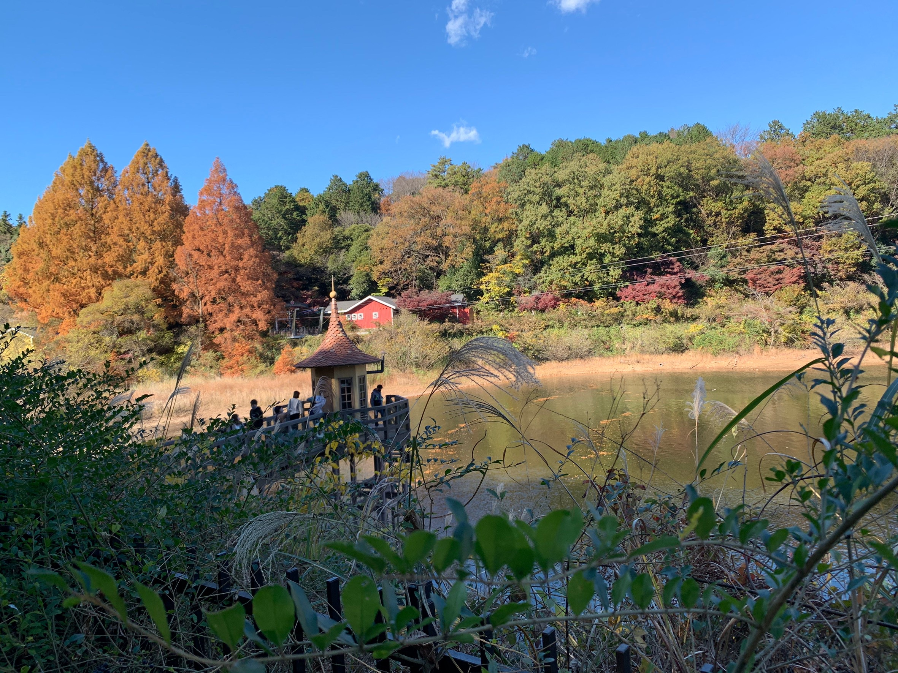
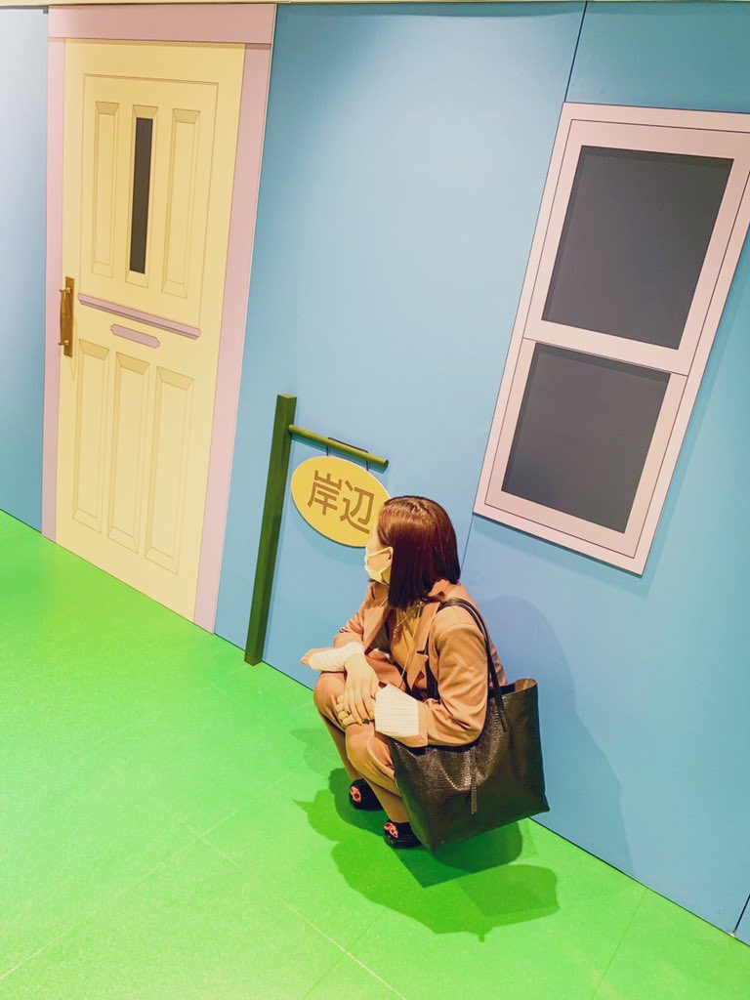

About

Hanako Suzuki(仮)
- 26歳 鹿児島県生まれ埼玉県育ち
- webデザイン未経験からスタート
- 趣味は旅行・ドライブ
- 日常を写真で切り取ることが好き
- ナチュラルな雰囲気を活かすWebページ作成を目指す
Favorite

長野県旅行にて、古戦場は英語でそのまま Old Battlefield だったのが面白かった

忍野八海の御釜池。水が透き通っていて吸い込まれそうでした。

白川郷の城川八幡神社。アニメの聖地巡礼をしてきました。